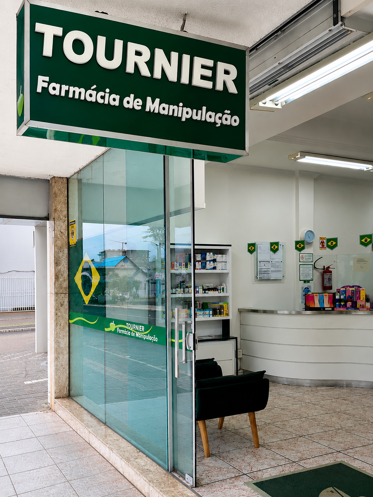
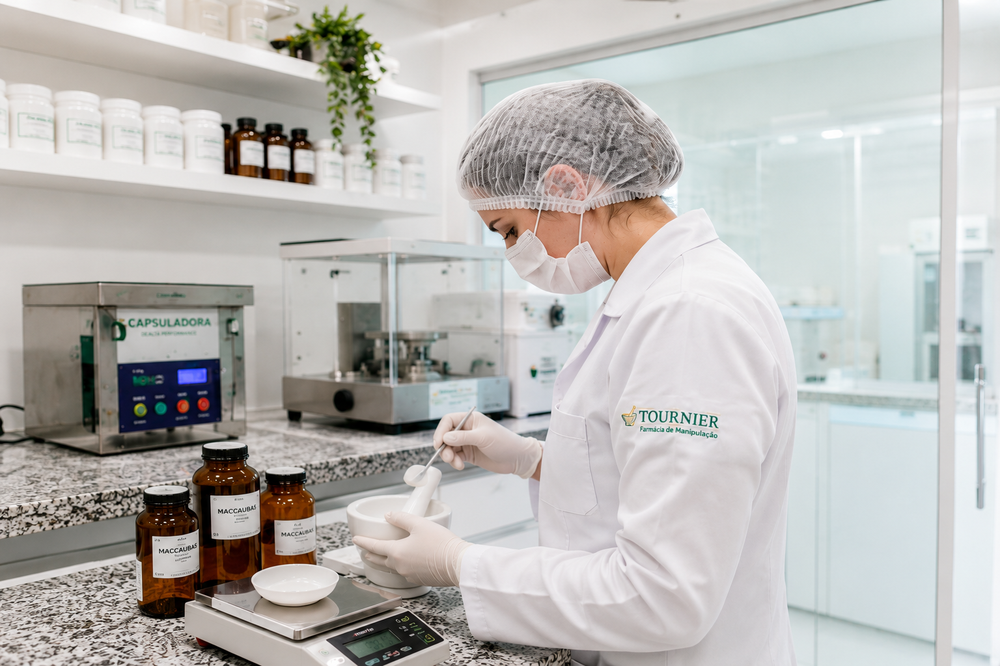

Matéria-prima de qualidade
Trabalhamos com matérias-primas cuidadosamente selecionadas para garantir qualidade e confiança em cada fórmula manipulada.
Há mais de 20 anos, a Farmácia Tournier une qualidade, responsabilidade e atendimento humanizado para desenvolver fórmulas pensadas especialmente para cada pessoa.


A Farmácia de Manipulação Tournier nasceu com o propósito de oferecer soluções personalizadas para a saúde e o bem-estar de cada cliente.
Trabalhamos com atenção em cada etapa, desde o atendimento até a entrega da fórmula, respeitando as necessidades individuais e elevados padrões de qualidade.
Atendimento próximo e humanizado
Fórmulas desenvolvidas de forma personalizada
Compromisso com segurança e qualidade
Há mais de duas décadas unindo qualidade, segurança e atendimento humanizado para oferecer soluções personalizadas para cada cliente.
Trabalhamos com matérias-primas cuidadosamente selecionadas para garantir qualidade e confiança em cada fórmula manipulada.
Cada cliente é recebido com atenção, respeito e orientação personalizada durante todo o atendimento.
Profissionais preparados para orientar, esclarecer dúvidas e oferecer um atendimento seguro e confiável.
Cada fórmula é preparada conforme a prescrição, respeitando as necessidades individuais de cada pessoa.
Organização e processos eficientes para que seu pedido seja preparado com cuidado dentro do prazo combinado.
Todas as etapas passam por conferências criteriosas para garantir precisão, segurança e tranquilidade.
Da apresentação da receita até a entrega, cada pedido passa por um processo atento e responsável.
Você apresenta sua prescrição ou informa a fórmula desejada para solicitar o orçamento.
Nossa equipe confere cuidadosamente todas as informações necessárias para o preparo.
A fórmula é preparada seguindo critérios técnicos e rigorosos padrões de qualidade.
O pedido passa por uma etapa final de verificação antes de ser liberado.
Você recebe sua fórmula com as orientações necessárias para a utilização.
“Cada fórmula manipulada carrega muito mais do que ingredientes. Carrega responsabilidade, cuidado e o compromisso de entregar exatamente aquilo que cada tratamento precisa.”
Entre em contato para solicitar um orçamento, enviar sua receita ou tirar suas dúvidas.
Av. Sete de Setembro, 1930
Centro, Araranguá - SC
Segunda a sexta: 8h às 12h e 13h às 18h
Sábado: 8h às 12h
Domingo: fechado